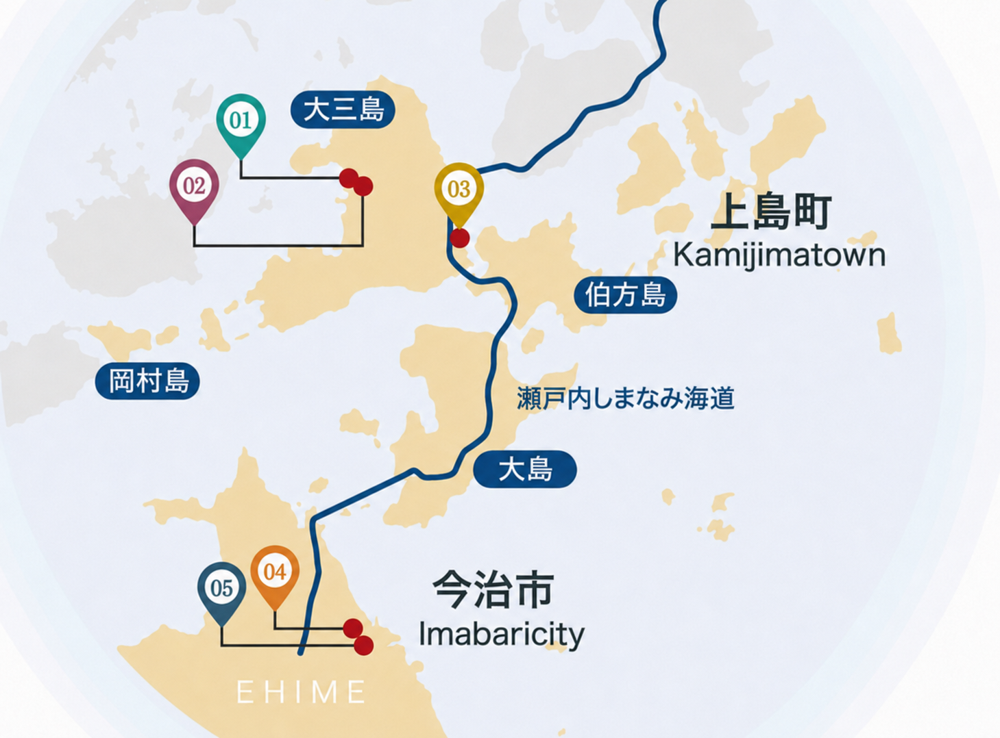

地図

地図を大きく見る- 大三島ブリュワリービール 大三島住所〒794-1304 愛媛県今治市大三島町宮浦5589電話0897-72-9248経路を見る
- 大三島みんなのワイナリーワイン 大三島住所〒794-1304 愛媛県今治市大三島町宮浦5562電話0897-72-9377経路を見る
- 大三島リモーネリキュール 大三島住所〒794-1404 愛媛県今治市上浦町瀬戸2342電話0897-87-2131経路を見る
- 今治街中麦酒ビール 今治住所〒794-0015 愛媛県今治市常盤町3丁目4-13電話0898-35-4313経路を見る
- 八木酒造部日本酒 今治住所〒794-0042 愛媛県今治市旭町3丁目3-8電話0898-22-6700経路を見る
体験
体験情報は、決まり次第ご案内します。
イベント
イベント情報は、決まり次第ご案内します。